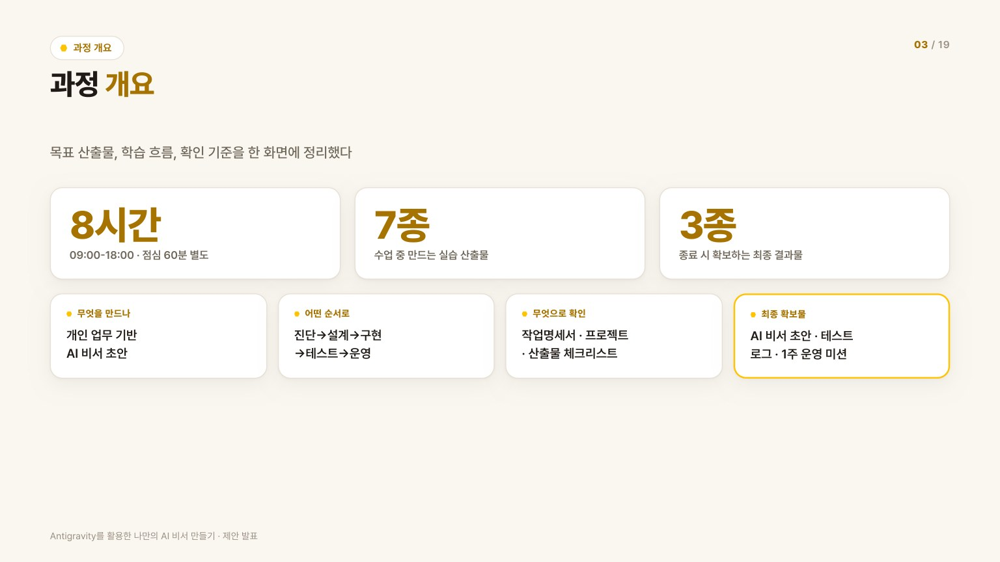
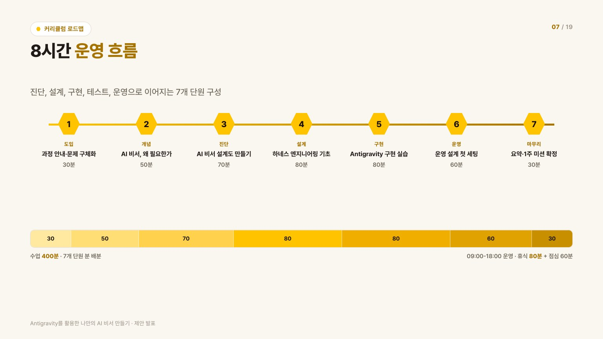
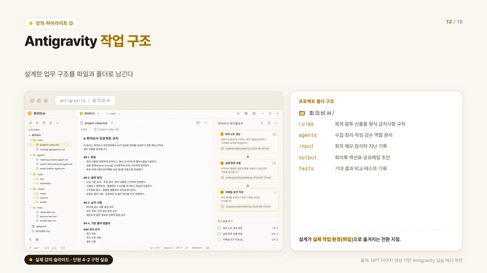

좋은 질문을 넘어, AI가 반복 업무를 보조할 구조를 설계한다
많은 실무자가 생성형 AI를 쓰지만 결과물이 매번 흔들리고, 잘 만든 프롬프트도 다음 업무에 재사용하지 못합니다. 이 과정은 그 원인을 역할·규칙·출력 기준이 문서화되지 않은 구조의 문제로 보고, 교육의 초점을 "좋은 질문을 하는 법"에서 "AI가 반복적으로 일할 수 있는 구조를 설계하는 법"으로 옮깁니다.
최종 학습 목표 — 수강자가 자신의 반복 업무를 진단하고, AI 비서의 역할·규칙·입력자료·출력물·검토 기준을
설계해 실제 업무에 적용 가능한 개인 AI 비서 운영 매뉴얼을 완성한다.

진단 → 설계 → 구현 → 테스트 → 운영, 한 가지 업무를 끝까지
- 1. 오프닝 · 문제 인식 (30분)과정 소개와 AI 비서 개념, 반복 업무 부담 확인 — 업무 고민 카드 작성
- 2. AI 비서 이해 (50분)단순 프롬프트 활용의 한계와 AI 비서의 조건, 적용 가능한 업무 범위 점검
- 3. 개인 업무 진단 (70분)반복 업무 분해와 우선순위 선정 — 반복 업무 진단표·적용 업무 선정표
- 4. 업무 구조 설계 (80분)작업명세서·입력/출력 기준·역할·규칙·금지사항·검토 기준 설계
- 5. Antigravity 구현 실습 (80분)rules·agents·input·output·tests 구조를 직접 구성하고 실행 테스트
- 6. 운영 매뉴얼 완성 (60분)주간 업무 루틴 연결과 사용 시점·검토 기준·개선 루틴 정리
- 7. 클로징 (30분)핵심 개념 정리와 산출물 점검, 1주 실행 계획 확정

예제가 아니라 내 업무로, 실행 환경까지
- 내 업무 기반 맞춤 설계 — 일반 예제가 아니라 수강자 본인의 반복 업무를 진단해 우선 적용 업무를 선정
- Antigravity 실행 환경 구축 — 프롬프트 작성에 그치지 않고 rules·agents·input·output·tests 구조로 AI가 일할 환경을 직접 구성
- 운영 매뉴얼과 개선 루틴까지 — 교육 후 실제 업무에 적용하고 테스트 기록으로 지속 고도화할 수 있는 문서를 완성
회의 메모 한 장이 회의록·액션아이템·메일 초안으로
강의 실습 흐름을 검증하기 위해 회의비서(meeting-assistant) 예제 프로젝트를 직접 구현했습니다. 주간 팀 회의 메모를 입력하면 AI 비서가 회의록·액션아이템 표·공유메일 초안·검수 의견을 만들도록 설계한 샘플입니다.
- rules — 말투, 산출물 형식, 금지사항 같은 공통 기준
- agents — 수집·정리·작성·검수로 나눈 역할별 에이전트 4종
- input / output — 회의 메모가 들어가고 회의록·액션표·메일 초안이 나오는 입출력
- tests — 1차 실행 결과와 수정본을 비교한 테스트 로그로 개선 과정을 기록

수강자가 가져가는 결과물과 내가 만든 자료
8시간
1일 집중 과정
수업 400분 · 휴식 80분
7모듈
진단 → 운영
단계별 산출물 연결
7종
수강자 산출물
개인 AI 비서 운영 매뉴얼
교육 자료로 직접 제작한 산출물
화려함이 아니라 구조화와 재사용성을 본다
- 업무 선정 — 반복성·효과성·입출력 명확성·보안 안전성을 고려해 적합한 업무를 골랐는가
- 구조 설계 — 목적·입력·출력·조건·역할·금지사항·검토 기준이 구체적인가
- 구현 — Antigravity 프로젝트 구조와 규칙, 에이전트 역할이 분리되어 있는가
- 테스트와 운영 전환 — 기대 결과와 실제 결과를 비교해 개선했고, 1주 안에 실행할 운영 계획을 세웠는가
즉, 다시 실행해도 비슷한 품질이 나오는 구조를 만들었는지가 핵심 평가 기준입니다.
운영 흐름 · 작업 구조 · 핵심 메시지
AI를 쓰는 사람에서, AI가 일할 구조를 설계하는 사람으로
교육 운영 실무 경험과 AI 업무 구조화 역량을 결합해, 한 번 써보는 AI 교육이 아니라 교육 직후 현업 주간 루틴으로 이어지는 실습형 교육과정을 요구분석부터 커리큘럼·교안·평가·제안까지 단독으로 설계했습니다. 좋은 AI 교육은 도구 사용법이 아니라 일하는 방식을 남긴다는 것을 보여준 프로젝트입니다.